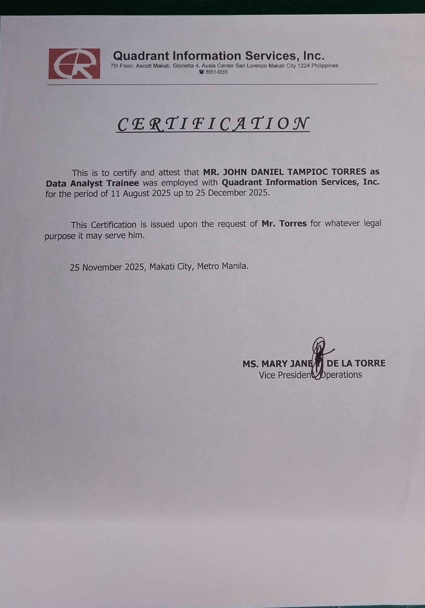

Previous Salary: ₱20,000 Basic + ₱5,000 WFH Allowance (Total ₱25,000)
Company: Quadrant Information Services Inc.
Length of Employment: 4 months
₱25,000 – ₱28,000 monthly based on my previous compensation and my experience handling data processing and Excel reporting. I am open to discussion depending on the responsibilities of the role.
Onsite in Makati: Yes
Evening Shift (10PM – 7AM): Yes
At Quadrant Information Services Inc., I worked with datasets related to insurance clients. My tasks included:
Quadrant Information Services provides data processing and software services related to insurance data systems and analytics.
Microsoft Excel: Intermediate
Power BI: Beginner
As a relatively new employee, I was affected when some insurance clients did not renew or extend their contracts, which led to a company downsizing. The decision was based on business needs and not related to individual performance.
Online job posting.
I am looking for a company where I can develop my data analysis skills, contribute to data-driven decision making, and grow professionally in a collaborative environment.
None.
Company: Quadrant Information Services Inc.
Role: Data Analyst
Inclusive Dates: 4 months
Reason for Leaving: Company downsizing due to reduction of insurance client contracts.
